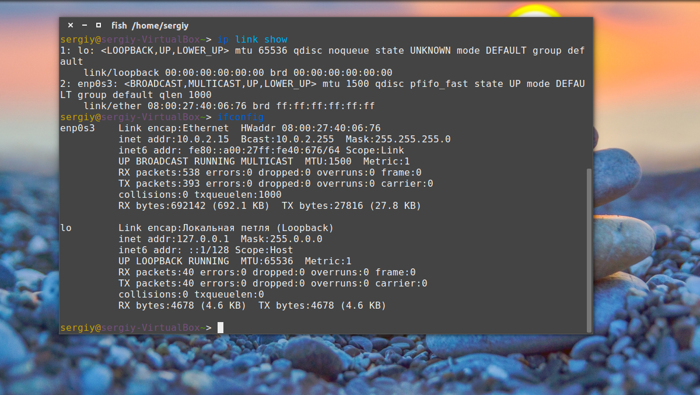
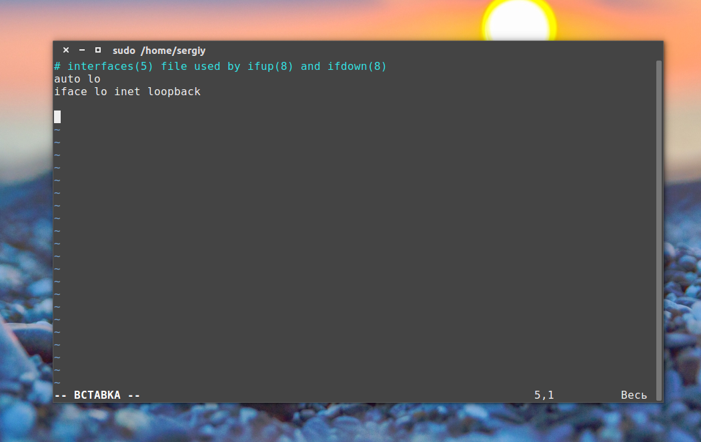
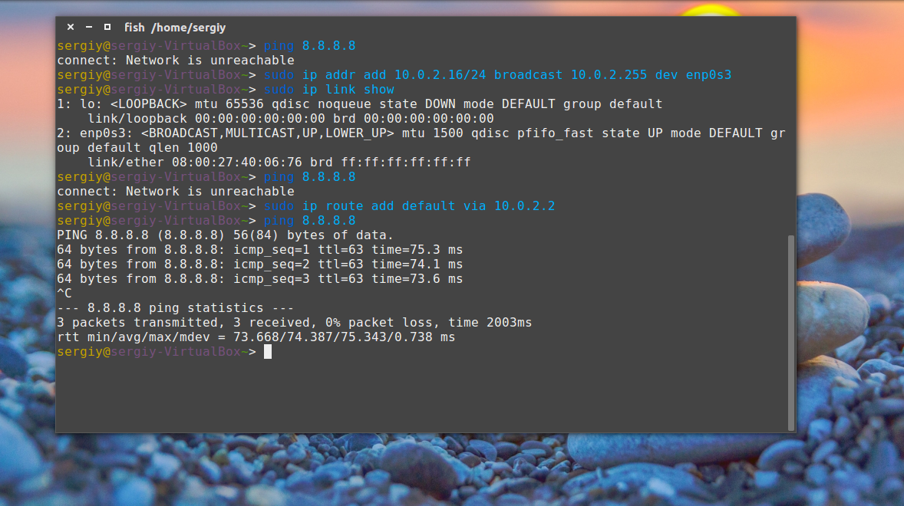

Главная
Настройка сети из консоли в Ubuntu
Настройка сети из консоли в Ubuntu
Терминал Обновлено: 9 августа, 2020 19 admin
В Ubuntu подключение к сети настраивается с помощью сервиса Network Manager. Чтобы подключиться к сети, достаточно пару раз кликнуть мышкой, выбрать соединение - и готово. То же самое, и даже ещё проще, при использовании проводного соединения - тут интернет подключается автоматически, как только загрузился апплет.
Но не всегда доступен графический интерфейс: после неудачной установки драйвера или очередного обновления не запускается графическая оболочка, а на серверах она и вовсе не используется. В этой небольшой инструкции будет разобрана настройка сети Ubuntu из консоли. Мы поговорим о том, как настроить получение IP-адреса по DHCP, а также настроить работу DNS. Рассмотрим ручную и автоматическую настройку, также попробуем сделать это через системные конфигурационные файлы.
Перед тем, как перейти к самим командам, давайте немного разберёмся в теории работы сети. Это нужно, чтобы вы не просто выполнили какие-то непонятные команды, а поняли всю суть того, что мы будем делать и как выполняется настройка локальной сети Ubuntu.
Компьютеры обмениваются между собой информацией с помощью пакетов. Все данные в сети интернет передаются с помощью пакетов небольшого размера. Если не углубляться в подробности, то каждый пакет содержит адрес отправителя, адрес получателя и сами данные. Эти адреса есть не что иное, как привычные нам IP-адреса. Кроме IP, у компьютера есть физический адрес, который используется для общения между компьютерами в локальной сети. Это MAC-адрес? и задается он производителем сетевой карты.
Как только компьютер подключился к сети, независимо от того проводное это соединение или беспроводное, он может общаться только с компьютерами в локальной сети и только по физическим адресам. Для того, чтобы получить доступ в Глобальную сеть, машине в ней нужно получить IP-адрес. Для этого используется протокол DHCP. Если кратко: наш компьютер спрашивает все компьютеры в локальной сети, кто здесь DHCP-сервер, DHCP ему отвечает и выдаёт IP-адрес. Таким же образом компьютер узнаёт IP маршрутизатора, через который он может получить доступ к Сети, а затем пытается найти DNS-серверы или узнать стандартные у маршрутизатора. С теорией разобрались, перейдем к практике.
Настройка сети через терминал в Ubuntu
Тут мы рассмотрим автоматическую настройку сети для Ubuntu 16.04 без Network Manager с помощью стандартных скриптов системы, которые остались от Upstart и пока всё ещё используются. Давайте сначала определим, какие шаги нам нужно предпринять, чтобы всё заработало:
Собственно, готово. Эти шаги очень символичны, потом что система всё сделает за нас сама. Нам нужно только выполнить нужные настройки. Но сначала давайте посмотрим, какие сетевые интерфейсы подключены к системе. Мне нравится команда:
ip link show
Но если хотите, можете использовать ifconfig:
ifconfig

В нашей системе только один интерфейс - это enp0s3, есть еще lo, но он виртуальный и указывает на эту машину.
Настройки сети находятся в файле /etc/network/interfaces.

Нас будут интересовать в этом файле строчки auto и iface. Первая указывает, что нужно активировать интерфейс при загрузке, вторая же определяет настройки самого интерфейса.
Настройка динамического получения IP-адреса
Добавьте в этот файл такие строки, чтобы запускать интерфейс при загрузке и получать IP-адрес автоматически по DHCP:
auto enp0s3
iface enp0s3 inet dhcp
Синтаксис строки auto прост. Он состоит из самой команды и имени сетевого интерфейса. Рассмотрим подробнее:
$ iface интерфейс inet тип
Тип получения IP-адреса может иметь несколько значений, но нас в этой статье будут интересовать только два: dhcp и static.
После завершения настройки сохраните файл и перезапустите сетевой сервис:
sudo service networking restart
Всё, если сетевой кабель подключён, и вы всё сделали правильно, Сеть будет работать.
Настройка статического адреса Ubuntu
При настройке статического IP-адреса компьютер не будет связываться с DHCP-сервером, поэтому здесь придётся указать намного больше параметров.
Содержимое нашего конфигурационного файла будет выглядеть вот так:
auto eth0
iface eth0 inet static
address 192.168.1.7
gateway 192.168.1.1
netmask 255.255.255.0
network 192.168.1.0
broadcast 192.168.1.255
С первыми двумя строчками все понятно, а следующие задают параметры настройки интерфейса:
Как видите, network и broadcast - это первый и последний IP-адреса сети. Теперь сохраните файл и перезапустите сеть:
sudo service networking restart
Если все параметры были указаны правильно, всё будет работать. Но если допущена хоть одна ошибка, доступ к сети вы не получите.
Это была автоматическая настройка локальной сети Гbuntu, но я ещё расскажу, как всё сделать вручную, без конфигурационных файлов.
Ручная настройка сети в Ubuntu
Предыдущий вариант хорош, если вы собираетесь его использовать постоянно, но если нужно только один раз настроить сеть через терминал, то редактировать конфигурационные файлы необязательно. Мы можем всё сделать с помощью команды ip. Дальше будет рассмотрена настройка сети вручную Ubuntu.
Эта команда используется для управления сетью и входит во все дистрибутивы по умолчанию.
Как и в предыдущем примере, смотрим сетевые интерфейсы:
После того, как мы узнали интерфейс, можно переходить к настройке.
Сначала включаем интерфейс:
sudo ip link set enp0s3 up
Затем с помощью команды dhclient запрашиваем ip:
sudo dhclient enp0s3
Всё, настройка сети Ubuntu 16.04 завершена, у нас есть IP-адрес, и осталось только настроить DNS, но это мы рассмотрим ниже.
Включаем интерфейс:
sudo ip link set enp0s3 up
Устанавливаем IP-адрес, маску сети и broadcast-адрес для нашего интерфейса:
sudo ip addr add 192.168.1.7/255.255.255.0 broadcast 192.168.1.255 dev enp0s3
Указываем IP-адрес шлюза:
sudo ip route add default via 192.168.1.1
Здесь 192.168.1.7 - наш IP-адрес, 255.255.255.0 - маска сети, 192.168.1.255 - широковещательный адрес. Замените эти значения на свои.
Как видите, сеть работает. Если хотите поэкспериментировать на машине с рабочей сетью, её можно сбросить командой:
sudo ip -4 addr flush dev enp0s3
Служба DNS используется для преобразования доменных имен сайтов в IP-адреса. При получении IP-адреса автоматически через DHCP мы используем правильные DNS-серверы, но если мы выбрали статический IP, то DNS можно и не получить, поэтому придётся сделать всё вручную.
Если вам нужно настроить DNS так, чтобы он не сбивался после перезагрузки, необходимо использовать систему настройки сети Ubuntu. Для этого откройте файл /etc/network/interfaces и добавьте в него строчку после директив для нужного интерфейса:
dns-nameservers 8.8.8.8 4.4.4.4
Здесь 8.8.8.8 и 4.4.4.4 это IP-адреса DNS серверов, можете заменить их на свои. И можно использовать один, а не два. Дальше сохраните файл и перезапустите сеть:
sudo service networking restart
Если же вам нужно настроить DNS только для этого сеанса, то добавьте строчку в /etc/resolv.conf
sudo vi /etc/resolv.conf
nameserver 8.8.8.8
nameserver 4.4.4.4
После сохранения файла сеть будет работать полностью так, как нужно. Но последний способ пригоден только до перезагрузки, поскольку файл /etc/resolv.conf генерируется автоматически.
В этой статье была рассмотрена настройка сети Ubuntu из консоли. Я пытался не просто показать команды, с помощью которых это можно сделать, но и объяснить, как это работает. Теперь вы будете знать, что нужно делать, если у вас нет доступа к графическому интерфейсу, но срочно нужно попасть в сеть. Если остались вопросы, пишите в комментариях!
Похожие записи:
20 января, 2016
21 февраля, 2016
Как удалить пользователя в Linux
18 августа, 2020
Как расшарить USB по сети в Linux
3 апреля, 2016